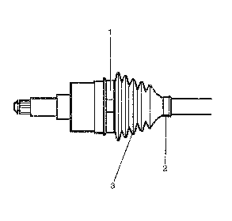
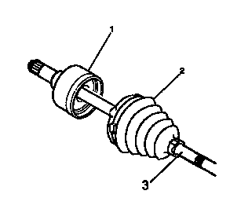
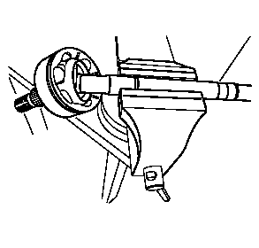
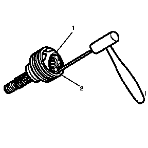
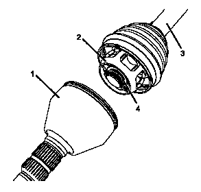
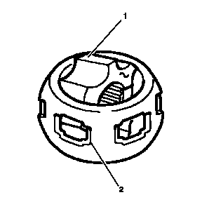
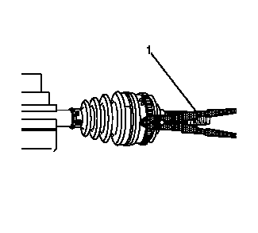

前轮驱动轴外万向节和护套的更换
专用工具
- • J 35566护套卡箍钳
- • J 8059卡环钳
拆卸程序
- 1.前轮驱动轴»拆下－前轮驱动半轴的更换－左侧、前轮驱动半轴的更换－右侧、前轮驱动半轴的更换－右侧（不带中间轴）
-

2.将外侧万向节护套小卡箍(2) 和大卡箍(1) 从外侧万向节护套(3) 上拆下。报废卡箍。
-

3.将外侧万向节护套(2) 从外侧等速万向节(1) 沿着互连轴(3) 移动。
-

4.用台钳夹住互连轴，使外侧万向节和互连轴成一定角度，露出内星轮端面。
-

5.用黄铜冲子顶住等速万向节滚动轴承隔圈(1)。
- 6.用手锤轻击铜冲子，使万向节滚动轴承隔圈 (1) 倾斜。
- 7.当等速万向节滚动轴承隔圈(1) 倾斜时，拆卸第一个铬合金球(2)。
- 8.沿相反方向倾斜等速万向节滚动轴承隔圈(1)，拆卸相对的铬合金球(2)。
- 9.重复本程序，将所有六个合金球全部拆卸。
-

10.将带驱动轴球笼(2) 的轴(3)，与外万向节壳体 (1) 分离。
- 11.使用J-8059 卡环钳，拆下卡环(4)。
- 12.从驱动轴杆上拆下球笼。
安装程序
- 1.安装护罩前，将小卡箍安装至驱动轴。
- 2.安装护套。
-

3.将润滑脂薄施于内、外座圈滚道的球槽中。
- 4.将内球笼(1) 脊面对准外球笼(2) 上的开口，保持内球笼与外球笼成90度插入外球笼。
-
5.将内外球笼安装至驱动轴杆。
- 6.将带驱动轴球笼(2) 的轴(3)，安装至外万向节壳体(1)。
- 7.安装六个钢球至球笼。
- 8.安装新的卡环（4）。
-

9.使用工具J-35566 夹钳（1）夹紧大小卡箍。
- 10.前轮驱动轴»安装－前轮驱动半轴的更换－左侧、前轮驱动半轴的更换－右侧、前轮驱动半轴的更换－右侧（不带中间轴）